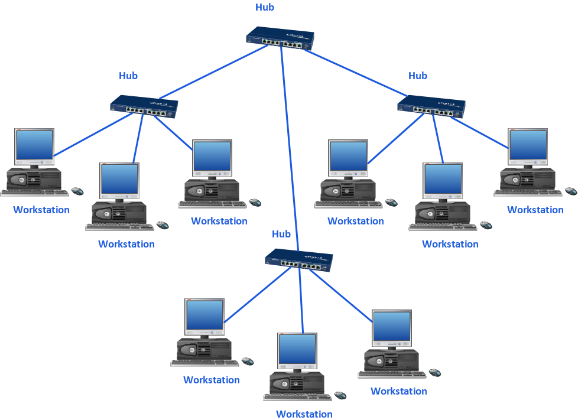

Mapa lógico de la infraestructura
Representación visual de la red basada en el diseño (routing / switching / dispositivos finales).

Leyenda de estados
- 🟢 Online
- 🔴 Offline
- 🟡 Degradación
Visualización didáctica de nodos y enlaces
Representación visual de la red basada en el diseño (routing / switching / dispositivos finales).
